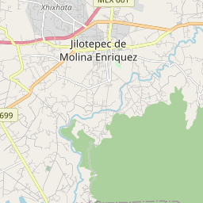

Tipo
Subtipo
Ruta turística
Parada Turística
Municipio
Colonia
Colonia Centro, Jilotepec
Calle y número
Av. Licenciado Ismael Reyes Retana
Código Postal
54240
Descripción general
Parque ecológico de recreación familiar.
Reseña
En este parque encontrarás juegos infantiles, y una explanada para eventos de recreación familiar. Se trata del lugar ideal para estar en contacto con la naturaleza y admirar las aves que se postran en la vegetación. ¡Visita este agradable espacio con tus seres queridos!
Rutas de acceso
Autopista México-Queretaro, tomar desviación a Jilotepec y llegar a la colonia centro en la calle Ismal Reyes Retana.
Relación con otros recursos turísticos
Tiempo estimado de visita
4.00hr(s)
Costo
$15.00
Moneda
MXN
Lunes:
9:00-17:00
Martes:
9:00-17:00
Miércoles:
9:00-17:00
Jueves:
9:00-17:00
Viernes:
9:00-17:00
Sábado:
9:00-17:00
Domingo:
9:00-17:00